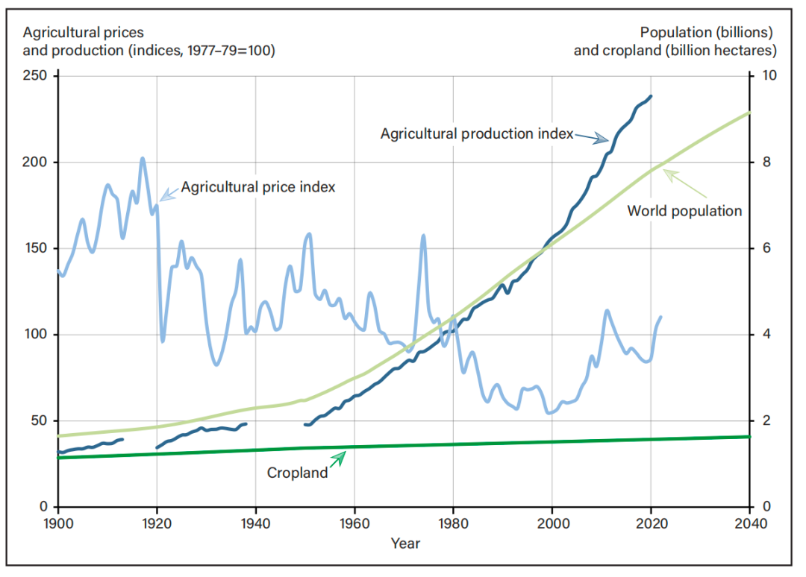
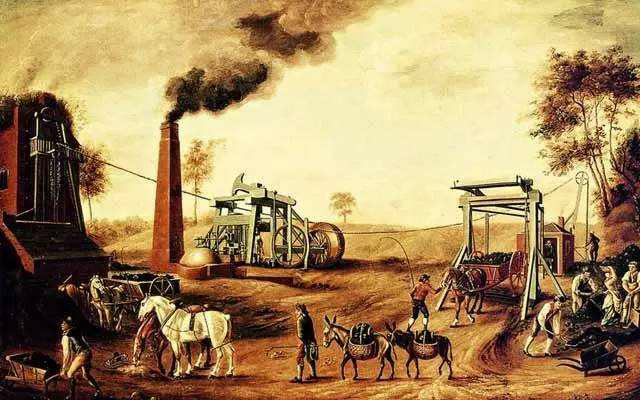
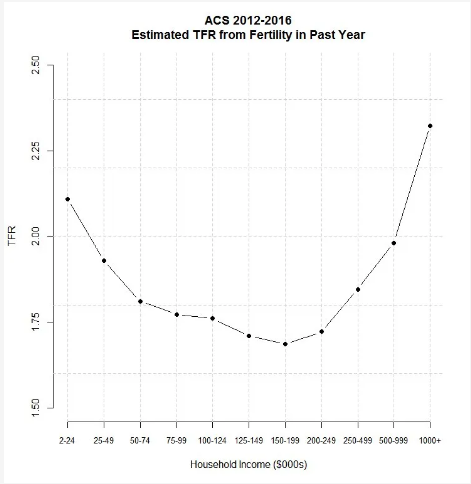

“Every species of animals naturally multiplies in proportion to the means of their subsistence, and no species can ever multiply beyond it.”—— Adam Smith
S曲线的桎梏与突破
物种个体数量增长的S型曲线描述的情形正如亚当·斯密在《国富论》中所说：“每个物种的数量自然会随着它们的食物来源而增加，并且没有任何物种能够超越其食物供应的极限。”同样作为地球上的物种之一，人类的个体数量增长似乎也难逃S型曲线的“诅咒”。在资源丰富、生存空间充足的时期，一个物种会极尽可能地掠取资源并迅速扩展种群数量，此时物种个体数量的增速越来越快；当膨胀的种群数量消耗掉大量的资源、挤占大部分生存空间时，继续新增的个体会过度消耗已有资源从而使得物种个体数量的增速放缓甚至出现负增长，此时物种个体的增长进入摇摆不定的动态平衡期。
在既定的外界因素与技术条件下，一个物种的个体数量及其增长已经被该种群所能接触到的资源决定，也就形成了其个体数量增长的S型曲线的上界。对于大多数物种来说，S型曲线的上界阻止了该物种个体数量持续增长，过往以马尔萨斯为代表的经济学理论同样认为人类种群的个体数量变动应该被一个既定的S型曲线的上界所限制。
但是人类在地球上的物种中也具备一定特殊性，造就了其不同于其他物种的S型曲线变化趋势。这种特殊性并非源于人类独特的生态位抑或人类在生物链中的霸主地位，而是来自人类拥有其他物种所不具备的不断迭代发展的技术条件。库兹涅茨所提出的划时代创新证明了这一点：人类种群数量的S型曲线的上界不仅仅因为外部气候条件的改变而移动，人类自身科技的进步提高其利用有限资源的效率一样会使得S型曲线向更高的边界发展，其他物种因为没有显著的内生科技进步所以S型曲线的上界更多由外生因素决定。
更令人惊奇的是，人类的独特创造力所带来的S型曲线上界的突破早在旧石器时代便已经体现出来。Christian（2024）提出人类的祖先早在大约五万年前便带领小种群在非洲、亚欧大陆和美洲等地区迁徙，而人类完成跨越大洋的迁徙必须通过提高从环境中获取资源的效率来实现，例如他们要学会控制火，在不同的地形上获取恰当的材料以搭建房屋以及狩猎更多样的动物等等。
到了农业时代人类能更高效地利用太阳能资源为自身提供食物，对太阳能的利用无疑大大提高了S型曲线的上界，但人类仍然无法从S型曲线的上界中解放出来。伴随农业社会而来的是更加复杂的关系与分配规则，资源更容易被集中到特定阶层或人群的手中，由此有限资源的开发创新与利用效率会受到生产关系的限制。与此同时在农业社会中人类仍然只能利用大自然在短时间内积累的能量，人口增长突破S型曲线上界的可能性仍未显现。

图1 古代农业社会
如果说进入农业社会前人类总体可利用的资源相对匮乏而局部种群可利用的资源相对充足，那么进入农业社会后人类总体可利用的资源应是大大增加，但随之而来的是局部种群可利用的资源相对匮乏，这也是人类社会不平等问题加剧的表现之一。农业社会中的人类所面临的这种状况更加吻合马尔萨斯对于人口增长的假设，人口增长对可用资源的压力应证了马尔萨斯陷阱的存在，并且这种周期特征也逐渐由点扩散至面，最终覆盖大多数适宜人类居住的土地。
直到现代，或是进入工业社会之后，人类才真正看到突破S型曲线上界的希望。这个希望主要来源于两个方面：一是对化石燃料的高效开采和使用，使得人类能够利用地球过去2-3亿年间积累的太阳能，不再局限于使用现存动植物在短时间内积累的太阳能；二是人类对自然资源提取能力的提高不再完全依赖于人力资本或是人口数量的增加，对机械科技的创新一部分替代了人类劳动技能的进步。深藏在地底的巨量化石能源可观地增加了人类所能够利用的能量储备，虽然目前人类已探明的化石能源在短时间内是有限的，但这些不过是冰山一角，人类在长时间内仍能继续享用化石能源盛宴。
同时，还有一个十分有说服力的例子：两千年前的农业社会时期中国人最早将高炉的温度提升到1400℃以上，达到1538℃；进入工业革命后人类将蒸汽机用于高炉鼓风，使得高炉温度能稳定达到1538℃以上，焦炭高炉的温度可以达到2000℃；到了1957年人类已经能使用核裂变发电技术产生高达20亿℃的高温；这个数字在45年后翻了五千倍，2012年，人类已经能通过大型强子对撞机产生高达10万亿℃的高温。参考选取自Fuglie et al.（2024）的图1可以发现，工业时代后期人类在机械加持下的农业生产增速已经足以追上并超越人口数量增速，这种趋势首先表明工业时代下的人类已经破解了马尔萨斯陷阱，进而说明未来人口增长突破S型曲线的上界是极具潜力的。

图2 农业产出与世界人口
讨论S型曲线的形态对于接下来进行未来人口走势的预测分析是非常必要的，如上所说人类已经面临全新的S型曲线，同时人口死亡率也因技术进步趋于下降，S型曲线的上界将会被解放，因此我们也需要使用更新颖的视角分析人口走势。本文下一步所进行的分析都将基于S型曲线的上界被解放的前提，绝对资源量对人口增长的限制将会减少，而我们也将使用类似于Becker和Barro（1988）提出的生育成本与效益分析视角对未来的人口走势进行讨论。但是本文更倾向于从国家的人口生育成本效益而不是和B&B一样从家庭角度出发，因为本文假设家庭的生育决策模式在长时间内会随着人均收入的变动而改变并且现代国家会通过政策干预改变家庭生育的成本与效益进而调控生育行为。
生育属性的回归
人的生育属性，是相对于人的资本属性，或通常被称为人力资本来说的，但生育与劳动在发展中的作用并不是绝对一比一的，而且更难清晰地区分劳动和人力资本的作用，因此本文讨论的生育不是仅通过劳动作用于发展，而是通过更多样的方式影响人类的发展。在这一小节中本文更希望探讨的是人类发展历程中其资本属性和生育属性对种群发展的贡献程度的变化。
首先把目光投回到人类进入农业社会以前，当时人类家庭与所居住部落的生育目标是一致的，即使生育后代会给自身与种群带来资源负担，这依然是延续种群、扩展部落最基本、最有效的方式，也是抵御风险、留下火种最合适的方式，更大的部落规模意味着能够捕猎更大型的猎物以及更有效地抵抗其他部落的入侵。对于家庭来说，生育繁衍是人类的本能，也是提高家庭在部落内部地位的手段之一，此时人本身的生育属性是强烈的、原始的。
进入农业社会后，人的生育属性并没有得到削弱，而是进一步加强了。因为农业经济的集体耕种游牧、劳动力聚集与大分工极度依赖于人口数量的增长。从另外一个角度看，相对于工业时代的机械化生产过程来说，农业社会中的工具和技术在利用能量与资源的效率方面并没有对劳动力起到如此强大的替代作用。农业社会的人均资本量处于较低水平，意味着工具和技术的推广使用不能脱离人口的同步增长，无论是挥舞多一个锄头还是建造多一个灌溉渠都刚性地需要更多人口数量。
虽说农业社会的不平等问题和等级秩序会周期性调整人口增长的速率，但人处于这个阶段内在的生育属性不会因此改变，可以说这个时期人的生育属性与资本属性对种群发展的贡献同步增长。而农业社会中人类生育属性的贡献度理应比资本属性的贡献度增长地更快。这与上文所讲述的S型曲线的上界是相对应的，如果资本属性对发展的贡献比生育属性对发展的贡献更大，那么人的自然资源利用效率增长会快于人口增长，也就意味着S型曲线的上界被突破和马尔萨斯陷阱被破解，显然这种情况在农业社会中尚未发生。
人的生育属性在工业社会的初期才真正慢慢隐去。一方面，由于工业时代下人类整体医疗水平得到大幅改善，婴儿死亡率和老人死亡率相比农业社会都更低，人类不再需要通过大量生育对抗夭折的风险与较低的期望寿命。另一方面，避孕措施的现代化发展使得人类更不愿意向意外造成的生育行为妥协，同时人们也更加关注生育质量而不是生育数量。这种转变隐含了人的资本属性对生育属性的替代作用加强的趋势。在现代化机械生产的背景下，生育带来的体力劳动力增加对经济发展的贡献已经远远低于生育质量的提升对经济发展的贡献。从短期来看，工业时代初期的产出分配多数按照所拥有的资本数量进行，因此为了获得更高的人均分配产出，家庭倾向于缩减生育数量，拥有更多资本存量的发达国家也默许人口增速放缓以减少其福利国家支出和增加其在全球化大生产中的人均收益。

图3 工业革命时期的人类社会
但是从长期来看，人口增长的S型曲线的上界会被解放。被解放的人口增长曲线的上界意味着长远来看人类的整体数量还是不断增加的，但并不意味着所有国家内部的人口数量是不断增加的。如今生育率在不同的国家群组之间存在巨大的差异，大多数发展中国家，或是欠发达国家与地区拥有相对更高的总和生育率，而发达国家却面临较低的生育率水平与渐强的老龄化趋势。
由于大多数发展中国家的人口态势效应，其人口增长的速度远高于发达国家，而发达国家甚至在短期会出现人口衰退的现象，又由于发展中国家会逐渐模仿或学习发达国家的划时代创新（一方面，S型曲线的上界被解放是面向所有人类来说的；另一方面，过去的划时代创新例如电力、石油等也已经被发展中国家大范围应用，可能发展中国家不能做到从零开始进行划时代创新，但借助全球化他们也能作为人类整个物种的一部分享受到划时代创新的红利），如果未来人类资源利用效率的爆炸性提升是大范围普及的而不是仅仅被严格限制在一国或少数国家以内，那么如今的发展中国家同如今的发达国家最终比拼的并非利用资源的效率有多高或是科技有多发达，而是国家所拥有的人口数量有多少和未来维持人口数量的能力有多强，因为此时人口完全成为国家政权存在的根基，而资源的分配规则依据的是人最根本也是最无法替代也不可能替代的属性，即生育属性。
设想一个物质极大丰富的世界，但这个世界中的人是具有排他性的，意味着国家和民族仍然存在，人种之间的差异仍然存在，人与人之间的思想认同仍然没有达成一致，而资源的分配依然根据稀缺性进行分配的，那么对于个体来说，如果生育行为必须完全由人参与并进行（也就是说克隆人是不被允许的），那么其仅剩的稀缺性就来自于人类自身的生育属性，这也即后工业时代人类将面临的生育属性的回归。这些看似荒谬的推断都离不开一个重要的性质——人类生育属性的稀缺性。在人类一无所有的时候，他们富有生育属性，因此尽可能地繁衍生息，增加人口；在人类无所不有的时候，他们稀缺生育属性，因此国家间所比拼的便是生育潜力和人口。或者把生育属性同样看作一项资源，而这种资源并非无穷无尽的，当其他资源的需求过剩，那么生育属性这种资源就会被众人抢夺。
向U型曲线的彼端进发
最后，我们谈论关于收入和生育之间的关系。理论上S型曲线的上界被解放后收入增长比人口增长更加迅速，人均收入应该趋近于无限，当然这是在分配方式不变的前提下。第二节则已经说明了未来分配方式将有所改变，生育属性在分配中的地位会更加重要，不过这都是更加遥远的情况。回看过去的许多研究，包括David N. Well 在《经济增长》中都认为人均收入和总和生育率之间呈现负相关关系，收入的增加会对生育行为产生抑制作用（Bongaarts和Watkins，1996；Lee，2003；Bryant，2007）。但近年来也有研究者认为收入水平和生育数量呈U型曲线关系(Myrskylä et al.，2009)，不过这个观点很快遭到批驳，因为截面上的数据特征无法体现对时间演变的分析（Arland Thornton，2005）。为此Myrskylä et al.（2011）重新优化了他们的研究并提出性别平等才是与国家总和生育率显著正相关的因素，性别不平等问题严重的发达国家生育率持续降低。
这似乎不是一个容易探讨的问题，因为收入和性别平等之间的因果关系难以识别，可能存在双向因果的问题，而且性别平等与生育率的关系在不同收入组的家庭之间应该是不同的。对于小康水平的家庭，如果人均收入刚好足够一个人高质量生活，家庭应该更不愿意通过降低生活水平支付生育成本而进行生育；对于富裕的家庭，人均收入可能不仅足够一个人高质量生活，而且有充分剩余供养更多的后代，那么生育率理应更高。李子联（2016）研究中国居民的生育行为时就发现：当人均收入跨过一个门槛值时，收入越高的家庭会出现生育反转，即收入水平和生育率会呈同向变化，产生了U型曲线的右端。

图4 生育率与收入的U型曲线
但在可以预见的未来，大致分配方式不发生改变的前提下，如今的发展中国家面对生育成本提高的冲击时最终应该都会遭受同如今发达国家类似的生育率下跌困境。因为收入和生育之间的关系，其实是分配方式和生育之间的关系，这也部分解释了性别平等和生育之间的关系，性别观念更加平等也是一种分配方式的优化，意味着分配在性别层面的差异减小了。此时问题又变为：未来人类社会的分配方式会更加公平吗？这个问题可能又涉及到第一节中所说的S型曲线上界的解放。
公平与效率之间的取舍是一个亘古不变的话题，大多数时候公平都意味着牺牲效率，但我们可以乐观地说，如果S型曲线的上界被解放，效率的增长更快，那么牺牲一些效率换取公平也无妨。不过这些都是一些虚幻的设想罢了，然而人类向U型曲线彼端进发的步伐难以阻拦，纵使不公平不平等依然存在，生活也理应变得更加美好。
参考文献
[^1]Fuglie K O, Morgan S, Jelliffe J. World agricultural production, resource use, and productivity, 1961–2020[J]. 2024.